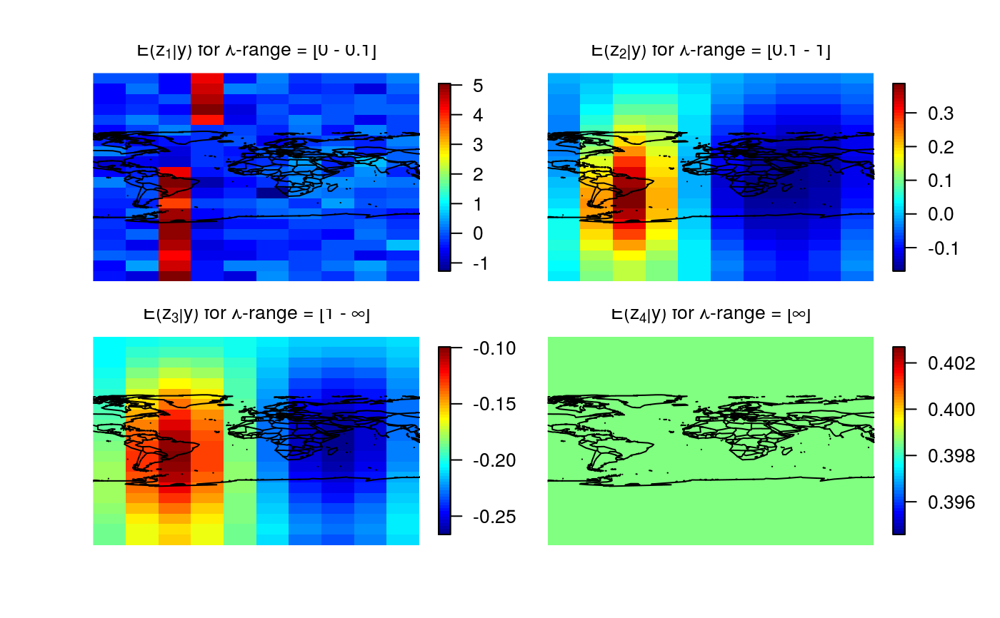
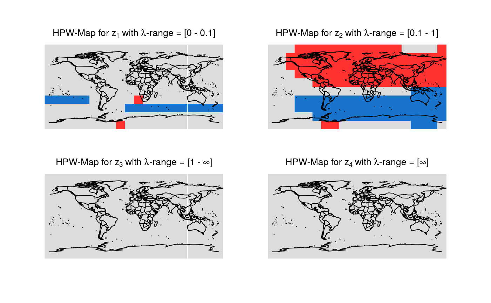

R/plot.HPWmapSphere.R
plot.HPWmapSphere.RdMaps with pointwise (PW) probabilities and/or highest pointwise (HPW) probabilities of all differences of smooths at neighboring scales are plotted. Continental lines are added.
# S3 method for HPWmapSphere plot(x, lon, lat, plotWhich = "Both", color = c("firebrick1", "gainsboro", "dodgerblue3"), turnOut = FALSE, title, ...)
| x | List containing the pointwise (PW) and highest pointwise (HPW) probabilities of all differences of smooths. |
|---|---|
| lon | Vector containing the longitudes of the data points. |
| lat | Vector containing the latitudes of the data points. |
| plotWhich | Which probabilities shall be plotted? |
| color | Vector of length 3 containing the colors to be used in the credibility maps. The first color represents the credibly negative pixels, the second color the pixels that are not credibly different from zero and the third color the credibly positive pixels. |
| turnOut | Logical. Should the output images be turned 90 degrees counter-clockwise? |
| title | Vector containing one string per plot. The required
number of titles is equal to |
| ... | Further graphical parameters can be passed. |
Plots of pointwise and/or highest pointwise probabilities for all differences of smooths are created.
The default colors of the maps have the following meaning:
Blue: Credibly positive pixels.
Red: Credibly negative pixels.
Grey: Pixels that are not credibly different from zero.
x corresponds to the hpout-part of the
output of mrbsizeRsphere.
# Artificial spherical sample data set.seed(987) sampleData <- matrix(stats::rnorm(2000), nrow = 200) sampleData[50:65, ] <- sampleData[50:65, ] + 5 lon <- seq(-180, 180, length.out = 20) lat <- seq(-90, 90, length.out = 10) # mrbsizeRsphere analysis mrbOut <- mrbsizeRsphere(posteriorFile = sampleData, mm = 20, nn = 10, lambdaSmoother = c(0.1, 1), prob = 0.95) # Posterior mean of the differences of smooths plot(x = mrbOut$smMean, lon = lon, lat = lat, color = fields::tim.colors())# Credibility analysis using pointwise (PW) maps plot(x = mrbOut$hpout, lon = lon, lat = lat, plotWhich = "PW")# Credibility analysis using highest pointwise probability (HPW) maps plot(x = mrbOut$hpout, lon = lon, lat = lat, plotWhich = "HPW")